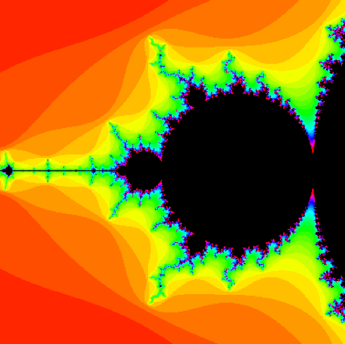

A recursive spiralogram. You can adjust the parameters to try
out different shapes and patterns. You can choose to display
the path it took, or to display the spiralogram itself.
MANDELBROT SET RELATIVES
click to interact

The infamous fractal, the mandelbrot set. You can interact with three
different types: mandelbrot set, julia set, and the burning ship fractal.
MANDELBROT SET RELATIVES
click to interact
The infamous fractal, the mandelbrot set. You can interact with three
different types: mandelbrot set, julia set, and the burning ship fractal.